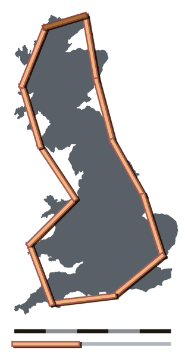
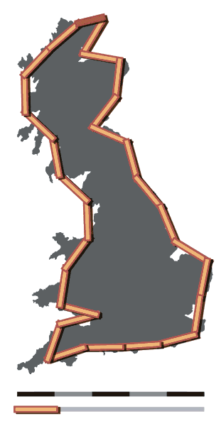
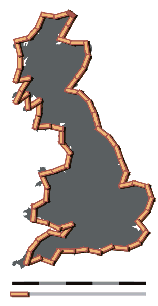
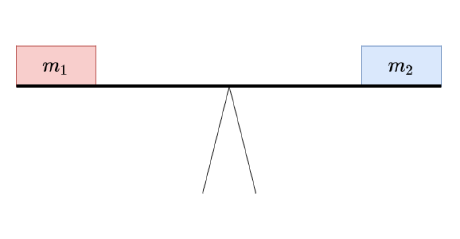
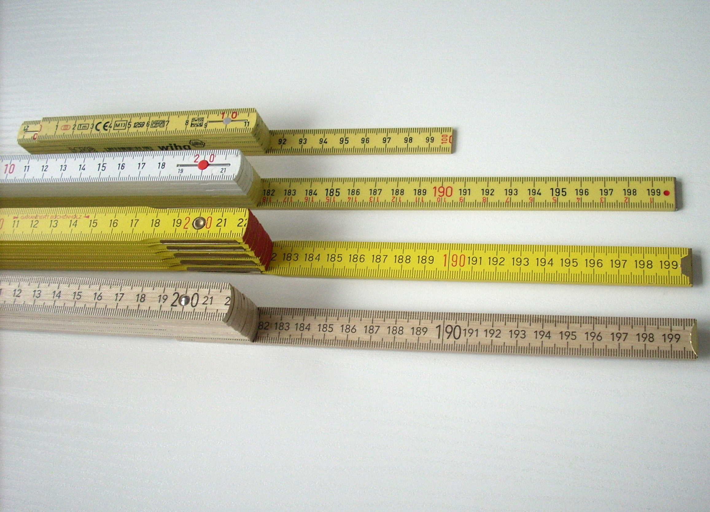
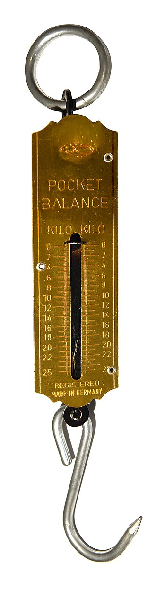
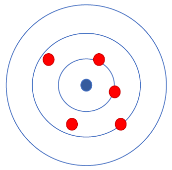
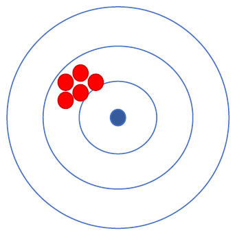
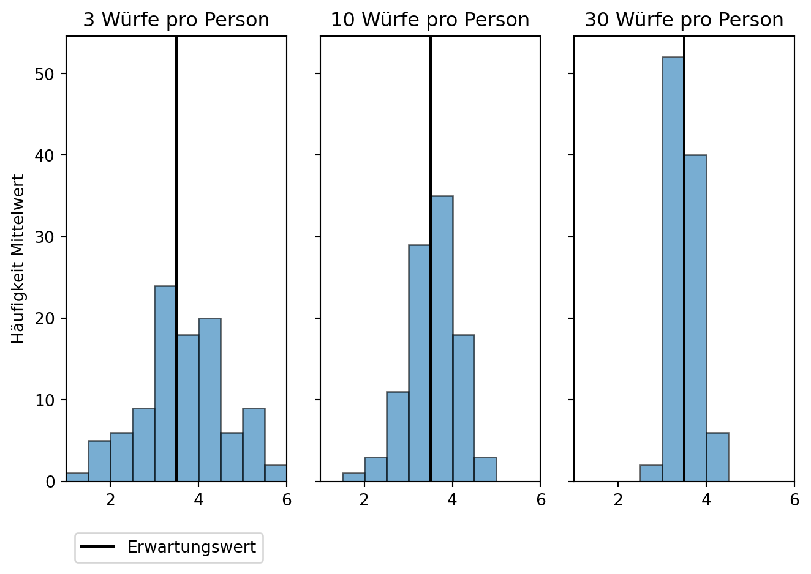
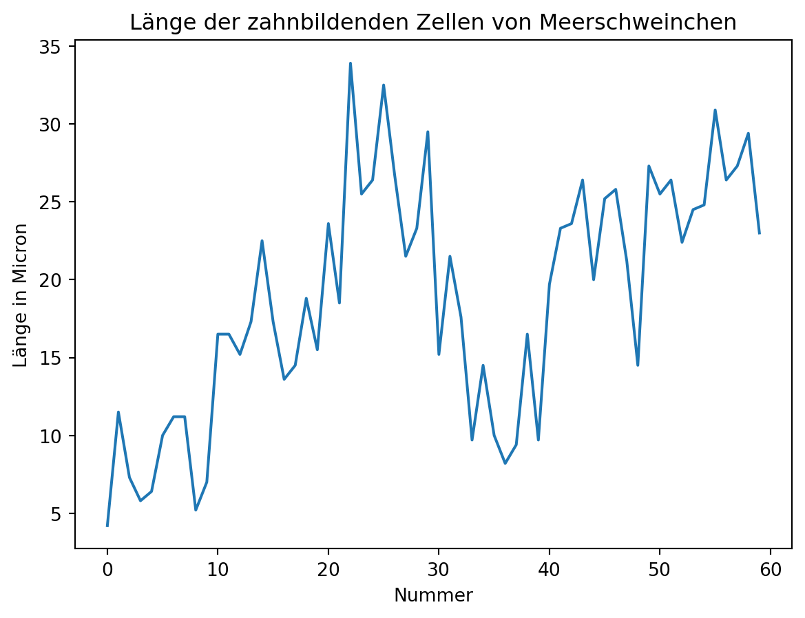

import numpy as np
import numpy.polynomial.polynomial as poly
import pandas as pd
import matplotlib.pyplot as plt
import scipy
import glob1 Das Prinzip von Messungen
“In der Physik existiert nur das, was gemessen worden ist” (Merz 1968, 14).
Merz, Ludwig.1968. “Grundkurs der Messtechnik. Teil I: Das Messen elektrischer Größen.” 2. Auflage. München;Wien. R. Oldenbourg Verlag.
In diesem Baustein werden die folgenden Module verwendet:
Physikalische Größen werden mit der Hilfe von Messgeräten bestimmt. Diese ordnen der tatsächlichen Merkmalsausprägung eine numerische Entsprechung relativ zu einem Bezugssystem zu.
Ein Beispiel: “Johanna ist am Messbrett 173 Zentimeter groß.”
- Die tatsächliche Merkmalsausprägung ist Johannas Größe.
- Das Messgerät ist das Messbrett.
- Die numerische Entsprechung ist 173.
- Das Bezugssystem ist das metrische System.
Messwerte können aus verschiedenen Gründen immer nur eine Annäherungen an den wahren Wert der zugrundeliegenden physikalischen Größe sein. Zum einen variiert die Größe eines Menschen im Tagesverlauf. Zum anderen ist das Messergebnis auch ein Ergebnis der verwendeten Skala. Wäre die Messung im imperialen Messsystem erfolgt, wäre Johannas Größe mit 68 Zoll bestimmt worden, was 172,72 Zentimetern entspricht.
Das Messergebnis ist also keine exakte Entsprechung der tatsächlichen Merkmalsausprägung. Ein bekanntes Beispiel für die mit dem Messvorgang verbundene Unsicherheit ist das Küstenlinienparadox: Das Ergebnis der Vermessung unregelmäßiger Küstenlinien wird umso größer, je kleiner die Messabschnitte gewählt werden.



Britain-fractal-coastline-200km, Britain-fractal-coastline-100km und Britain-fractal-coastline-50km von Maksim stehen unter der Lizenz CC BY-SA 3.0 und sind abrufbar auf Wikipedia (200km, 100km, 50km). 2006
{kind=link}
{kind=link}
{kind=link}
1.1 Messung
Definition 1.1: Messung
“Eine Messung ist der experimentelle Vorgang, durch den ein spezieller Wert einer physikalischen Größe als Vielfaches einer Einheit oder eines Bezugswertes ermittelt wird.
Die Messung ergibt zunächst einen Messwert. Dieser stimmt aber aufgrund störender Einflüsse mit dem wahren Wert der Messgröße praktisch nie überein, sondern weist eine gewisse Messabweichung auf. Zum vollständigen Messergebnis wird der Messwert, wenn er mit quantitativen Aussagen über die zu erwartende Größe der Messabweichung ergänzt wird. Dies wird in der Messtechnik als Teil der Messaufgabe und damit der Messung verstanden.”
Messung. von verschiedenen Autor:innen steht unter der Lizenz CC BY-SA 4.0 ist abrufbar auf Wikipedia. 2025
- Die ideale Messung ist eine direkte Messung oder der gesuchte Wert hängt linear vom gemessenen Wert ab.
- Die ideale Messung ist genau und präzise.
Direkte und indirekte Messung
Bei einer direkten Messung wird die Messgröße durch den unmittelbaren Vergleich mit einem Normal oder einem genormten Bezugssystem gewonnen.


Gliedermaßstäbe von Fst76 ist lizensiert unter CC-BY-SA 3.0 und ist abrufbar auf Wikimedia. 2014
{kind=link}
Bei einer indirekten Messung wird die Messgröße auf eine andere physikalische Größe zurückgeführt.

Spring scale von Amada44 steht unter der Lizenz CC-BY-SA-3.0 unported und ist abrufbar auf Wikimedia. 2016
{kind=link}
Observe the Moon wurde von der NASA veröffentlicht und ist abrufbar unter nasa.gov. 2010
Genauigkeit und Präzision


Die Genauigkeit einer Messung ist ein Maß für die Abweichung der Messwerte vom realen Wert. Die Genauigkeit ist nur bestimmbar, wenn anerkannte Referenzwerte vorhanden sind.
Die Präzision einer Messung beschreibt, wie gut die einzelnen Messwerte miteinander übereinstimmen. Die Präszision einer Messung wird über die Standardabweichung der Stichprobe bestimmt.
1.2 Messreihen
Um die Unsicherheit einer Messung zu verringern, kann man einen Messwert in Form einer Messreihe wiederholt aufnehmen. Die beste Schätzung der Messgröße bietet der arithmetische Mittelwert der Messreihe.
Der arithmetische Mittelwert einer Messreihe \(\bar{x}\) ist die Summe aller Einzelmesswerte \(x_i\) dividiert durch die Anzahl der Messwerte \(N\).
\[ \bar{x} = \frac{1}{N} \sum_{i=1}^{N} x_i \]
Mit Hilfe des arithmetischen Mittelwerts kann eine Aussage über die Streuung der Messwerte und die Präzision der Messung getroffen werden. Dazu werden die Varianz und die Standardabweichung der Messreihe berechnet.
Die Varianz ist der Mittelwert der quadrierten Abweichungen vom Mittelwert.
\[ \text{Var}(x_i) = \frac{1}{N} \sum_{i=1}^{N}(x_i - \bar{x})^2 \]
Die Quadratwurzel der Varianz wird als Standardabweichung bezeichnet. Diese hat den Vorteil, dass sie in der Einheit der Messwerte vorliegt und dadurch leichter zu interpretieren ist. Die Standardabweichung \(s\) wird so berechnet:
\[ s_{N} = \sqrt{\frac{1}{N} \sum_{i=1}^{N}(x_i - \bar{x})^2} \]
Für Stichproben wird die Stichprobenvarianz verwendet. Für die Standardabweichung einer Stichprobe gilt:
\[ s_{N-1} = \sqrt{\frac{1}{N-1} \sum_{i=1}^{N}(x_i - \bar{x})^2} \]
Da die Varianz das Quadrat der Standardabweichung \(s\) ist, wird diese häufig mit \(s^{2}\) gekennzeichnet.
Hinweis 1.1: Standardabweichung und Varianz in der Grundgesamtheit
In der Stochastik werden Formeln häufig auch mit griechischen Buchstaben geschrieben, wenn Sie sich statt auf eine Stichprobe auf die Grundgesamtheit beziehen.
Der Mittelwert in der Grundgesamtheit wird auch Erwartungswert genannt und mit dem griechischen Buchstaben \(\mu\) (My) dargestellt. Die Standardabweichung des Erwartungswerts wird mit \(\sigma\) (Sigma) gekennzeichnet. \[ \sigma = \sqrt{\frac{1}{N} \sum_{i=1}^{N}(x_i - \mu)^2} \]
Mit Hilfe der Standardabweichung kann der Standardfehler des Mittelwerts bestimmt werden. Der Standardfehler des Mittelwerts ist ein Maß dafür, wie genau sich der arithmetische Mittelwert der Stichprobe an den tatsächlichen Mittelwert der Grundgesamtheit, den Erwartungswert, annähert (dazu gleich mehr) und wird auch Stichprobenfehler genannt. Der Standardfehler des Mittelwerts wird aus der Standardabweichung einer Messung und der Wurzel der Stichprobengröße berechnet.
\[ \sigma_{\bar{x}} ~ = ~ \frac{s}{\sqrt{N}} \]
Da die Standardabweichung in der Grundgesamtheit in der Regel unbekannt ist, wird der Standardfehler des Mittelwerts mit der Stichprobenstandardabweichung geschätzt.
\[ \sigma_{\bar{x}}~ = ~ \frac{s_{n-1}}{\sqrt{N}} \]
Manchmal wird der Standardfehler zur längeren Schreibweise umgeformt.
\[ \sigma_{\bar{x}} ~ = ~ \frac{s_{n-1}}{\sqrt{N}} ~ = ~ \sqrt{\frac{1}{N(N-1)} \sum_{i=1}^{N}(x_i - \bar{x})^2} \]
Der Standardfehler wird umso kleiner (die Messung umso präziser), je kleiner die Varianz in der Grundgesamtheit und je größer der Stichprobenumfang ist.
Dies lässt sich mit einem simulierten Würfelexperiment verdeutlichen. Bei einem idealen, fairen Würfel kommt jede Augenzahl gleich oft vor. Der Erwartungswert eines sechsseitigen Würfels ist:
\[ \frac{1}{6} \sum_{i=1}^{i=6}(x_i) ~ = ~ 3,5 \]
Die Standardabweichung eines fairen, sechsseitigen Würfels beträgt:
\[ \sqrt{\frac{1}{6} \sum_{i=1}^{i=6}(x_i - 3,5)^2} ~ \approx ~ 1,71 \]
Da die Varianz in der Grundgesamtheit bekannt ist, hängt der Standardfehler des Mittelwerts eines fairen Würfels allein von der Stichprobengröße ab.
Experiment Verteilungskenngrößen
In einem simulierten Experiment würfeln 100 Personen jeweils 3, 10 und 50 Mal und bilden den Mittelwert der Augen. Weil ein fairer Würfel simuliert wird, kann der Standardfehler mit der Standardabweichung der Grundgesamtheit berechnet werden.
Würfe pro Person: 3 Stichprobengröße: 300
kleinster Mittelwert: 1.00 größter Mittelwert: 6.00
Stichprobenmittelwert: 3.57 Standardfehler: 0.10
Würfe pro Person: 10 Stichprobengröße: 1000
kleinster Mittelwert: 1.70 größter Mittelwert: 4.60
Stichprobenmittelwert: 3.49 Standardfehler: 0.05
Würfe pro Person: 50 Stichprobengröße: 5000
kleinster Mittelwert: 2.98 größter Mittelwert: 4.36
Stichprobenmittelwert: 3.50 Standardfehler: 0.02
Mit zunehmender Anzahl an Würfen nähern sich Minimum und Maximum der individuellen Durchschnittswerte sowie der Stichprobenmittelwert dem Erwartungswert an.
Hinweis: Da das Skript dynamisch generiert wird, wurden die Zufallszahlen mit einem festgelegten Startwert erzeugt.
Die Häufigkeit der individuellen Mittelwerte ist in den folgenden Histogrammen dargestellt.

Berechnung
personen = 100
standardabweichung_grundgesamtheit = np.arange(1, 7).std(ddof = 0)
seed = 1
# 3 Würfe
würfe = 3
## Personen stehen in den Zeilen (axis = 0), Würfe in den Spalten (axis = 1)
augen3 = np.random.default_rng(seed = seed).integers(low = 1, high = 6, endpoint = True, size = (personen, würfe)) # high is exclusive if endpoint = False
## zeilenweise Mittelwert bilden mit np.array.mean(axis = 1)
print(f"Würfe pro Person: {würfe}\t\t\t\t",
f"Stichprobengröße: {würfe * personen}\n",
f"kleinster Mittelwert: {augen3.mean(axis = 1).min():.2f}\t\t",
f"größter Mittelwert: {augen3.mean(axis = 1).max():.2f}\n",
f"Stichprobenmittelwert: {augen3.mean():.2f}\t\t",
f"Standardfehler: {standardabweichung_grundgesamtheit / ( augen3.size ** (1/2) ):.2f}\n",
sep = "")
# 10 Würfe
würfe = 10
## Personen stehen in den Zeilen (axis = 0), Würfe in den Spalten (axis = 1)
augen10 = np.random.default_rng(seed = seed).integers(low = 1, high = 6, endpoint = True, size = (personen, würfe)) # high is exclusive if endpoint = False
## zeilenweise Mittelwert bilden mit np.array.mean(axis = 1)
print(f"Würfe pro Person: {würfe}\t\t\t",
f"Stichprobengröße: {würfe * personen}\n",
f"kleinster Mittelwert: {augen10.mean(axis = 1).min():.2f}\t\t",
f"größter Mittelwert: {augen10.mean(axis = 1).max():.2f}\n",
f"Stichprobenmittelwert: {augen10.mean():.2f}\t\t",
f"Standardfehler: {standardabweichung_grundgesamtheit / ( augen10.size ** (1/2) ):.2f}\n",
sep = "")
# 50 Würfe
würfe = 50
## Personen stehen in den Zeilen (axis = 1), Würfe in den Spalten (axis = 1)
augen50 = np.random.default_rng(seed = seed).integers(low = 1, high = 6, endpoint = True, size = (personen, würfe)) # high is exclusive if endpoint = False
## zeilenweise Mittelwert bilden mit np.array.mean(axis = 1)
print(f"Würfe pro Person: {würfe}\t\t\t",
f"Stichprobengröße: {würfe * personen}\n",
f"kleinster Mittelwert: {augen50.mean(axis = 1).min():.2f}\t\t",
f"größter Mittelwert: {augen50.mean(axis = 1).max():.2f}\n",
f"Stichprobenmittelwert: {augen50.mean():.2f}\t\t",
f"Standardfehler: {standardabweichung_grundgesamtheit / ( augen50.size ** (1/2) ):.2f}\n",
sep = "")Darstellung
personen = 100
standardabweichung_grundgesamtheit = np.arange(1, 7).std(ddof = 0)
seed = 1
# 3 Würfe
würfe = 3
augen3 = np.random.default_rng(seed = seed).integers(low = 1, high = 6, endpoint = True, size = (personen, würfe)) # high is exclusive if endpoint = False
# 10 Würfe
würfe = 10
augen10 = np.random.default_rng(seed = seed).integers(low = 1, high = 6, endpoint = True, size = (personen, würfe)) # high is exclusive if endpoint = False
# 50 Würfe
würfe = 50
augen50 = np.random.default_rng(seed = seed).integers(low = 1, high = 6, endpoint = True, size = (personen, würfe)) # high is exclusive if endpoint = False
# plotten
bins = 10
# 3 Würfe
fig, (ax1, ax2, ax3) = plt.subplots(1, 3, sharey = True)
ax1.hist(augen3.mean(axis = 1), bins = bins, alpha = 0.6, edgecolor = 'black', range = (1, 6))
ax1.set_xlim(1, 6)
ax1.axvline(x = 3.5, ymin = 0, ymax = 1, color = 'black', label = 'Erwartungswert')
ax1.set_ylabel('mittleres Würfelergebnis')
ax1.set_ylabel('Häufigkeit Mittelwert')
ax1.set_title("3 Würfe pro Person")
ax1.legend(loc = 'lower left', bbox_to_anchor = (0, -0.2))
# 10 Würfe
ax2.hist(augen10.mean(axis = 1), bins = bins, alpha = 0.6, edgecolor = 'black', range = (1, 6))
ax2.set_xlim(1, 6)
ax2.axvline(x = 3.5, ymin = 0, ymax = 1, color = 'black')
ax2.set_ylabel('mittleres Würfelergebnis')
ax2.set_title("10 Würfe pro Person")
# 30 Würfe
ax3.hist(augen50.mean(axis = 1), bins = bins, alpha = 0.6, edgecolor = 'black', range = (1, 6))
ax3.set_xlim(1, 6)
ax3.axvline(x = 3.5, ymin = 0, ymax = 1, color = 'black')
ax3.set_ylabel('mittleres Würfelergebnis')
ax3.set_title("30 Würfe pro Person")
plt.tight_layout()
plt.show()Aufgabe Verteilungskenngrößen
Im Datensatz ToothGrowth.csv ist eine Messreihe zur Länge zahnbildender Zellen bei Meerschweinchen gespeichert. Die Tiere erhielten Vitamin C direkt (VC) oder in Form von Orangensaft (OJ) in unterschiedlichen Dosen.
dateipfad = "01-daten/ToothGrowth.csv"
meerschweinchen = pd.read_csv(filepath_or_buffer = dateipfad, sep = ',', header = 0, \
names = ['ID', 'len', 'supp', 'dose'], dtype = {'ID': 'int', 'len': 'float', 'dose': 'float', 'supp': 'category'})Crampton, E. W. 1947. „THE GROWTH OF THE ODONTOBLASTS OF THE INCISOR TOOTH AS A CRITERION OF THE VITAMIN C INTAKE OF THE GUINEA PIG“. The Journal of Nutrition 33 (5): 491–504. https://doi.org/10.1093/jn/33.5.491
Der Datensatz kann in R mit dem Befehl “ToothGrowth” aufgerufen werden.

Berechnen Sie den arithmetischen Mittelwert, die Varianz, die Standardabweichung und den Stichprobenfehler der Messreihe zur Zahnlänge (len). Verwenden Sie dazu die vorgestellten Formeln.
Das Ergebnis könnte so aussehen:
N: 60
arithmetisches Mittel: 18.81
Stichprobenfehler: 0.99
Stichprobenvarianz: 58.51
Stichprobenstandardabweichung: 7.65
Tipp 1.1: Musterlösung Verteilungskenngrößen
def verteilungskennwerte(x, output = True):
# Anzahl Messwerte bestimmen
N = len(x)
# arithmetisches Mittel bestimmen
stichprobenmittelwert = sum(x) / N
# Stichprobenvarianz bestimmen
stichprobenvarianz = sum((x - stichprobenmittelwert) ** 2) / (N - 1)
# Standardabweichung bestimmen
standardabweichung = stichprobenvarianz ** (1/2)
# Stichprobenfehler bestimmen
stichprobenfehler = standardabweichung / (N ** (1/2))
# Ausgabe
if output: # output = True
print(f"N: {N}\n",
f"arithmetisches Mittel: {stichprobenmittelwert:.2f}\n",
f"Stichprobenfehler: {stichprobenfehler:.2f}\n",
f"Stichprobenvarianz: {stichprobenvarianz:.2f}\n",
f"Standardabweichung: {standardabweichung:.2f}",
sep = '')
else: # output = False
return N, stichprobenmittelwert, stichprobenfehler, stichprobenvarianz, standardabweichung
verteilungskennwerte(meerschweinchen['len'])Varianz und Standardabweichung mit NumPy und Pandas
Die Module NumPy und Pandas verfügen über eigene Funktionen zur Berechnung der Varianz und der Standardabweichung. Die Varianz und Standardabweichung werden mit den Funktion np.var() und np.std() bzw. den Methoden pd.var() und pd.std() berechnet. Der Parameter ddof (delta degrees of freedom) steuert, welcher Nenner zur Berechnung der Varianz verwendet wird in der Form N - ddof. Während der Standardwert in NumPy ddof=0 ist, berechnet Pandas mit dem Standardwert ddof=1 die Stichprobenvarianz.
print("Varianz:")
print(f"NumPy:\t{np.var(meerschweinchen['len']):.2f}")
print(f"Pandas:\t{meerschweinchen['len'].var():.2f}")
print("\nStandardabweichung:")
print(f"NumPy:\t{np.std(meerschweinchen['len']):.2f}")
print(f"Pandas:\t{meerschweinchen['len'].std():.2f}")Varianz:
NumPy: 57.54
Pandas: 58.51
Standardabweichung:
NumPy: 7.59
Pandas: 7.65